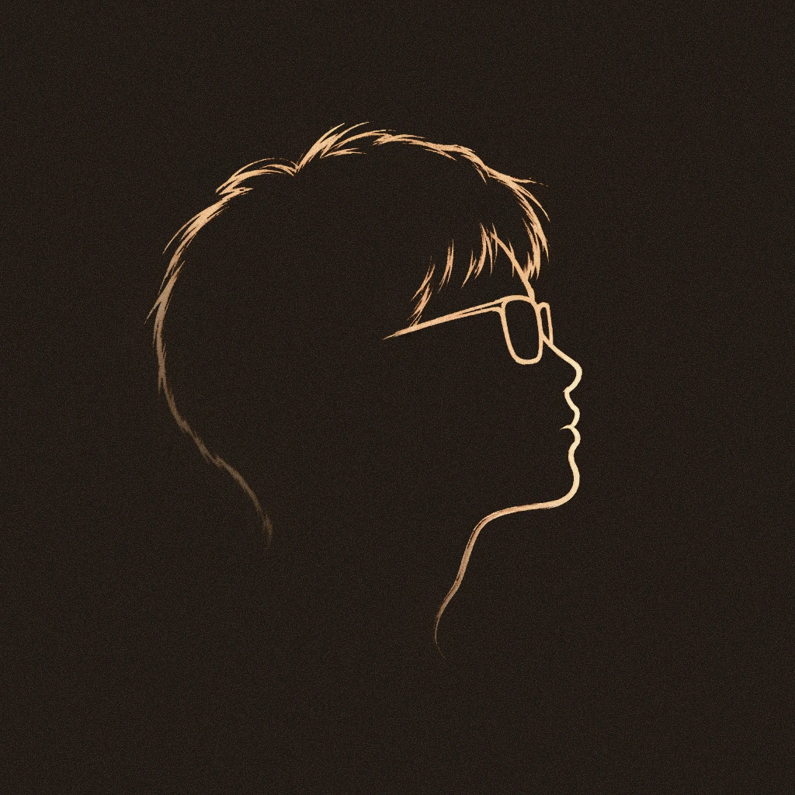

RE4LITYISSUBJECT1VE
“What is there, however strange,
can be accepted without question;
familiarity will be what overwhelms us.”
—— Eudora Welty

“What is there, however strange,
can be accepted without question;
familiarity will be what overwhelms us.”
—— Eudora Welty